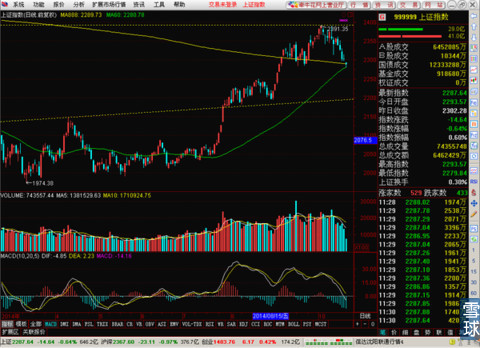
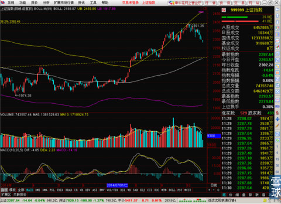
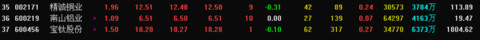
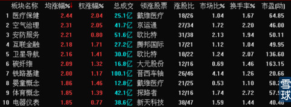
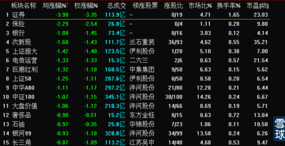
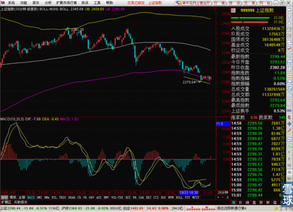
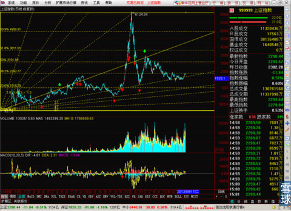
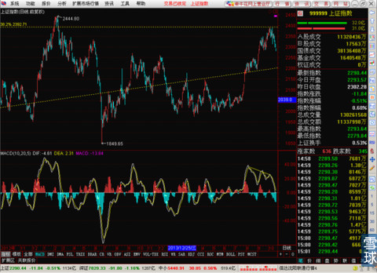

今天上证指数大幅低开的直接原因就是沪港通延期的问题，有些媒体洗地说10月开通沪港通是市场的预期，没有按时开通是正常的。这简直就是胡诌八扯，原定于25日和26日的彩排这个说明是港交所公布出来的，这怎么能算在市场预期上。无论香港现在的局势是不是对沪港通延期的第一影响因素，现在延期已经成为事实了，所以早盘银行和证券这两大金融权重板块直接大幅低开。整个上证指数也被拖累的低开。而且国务院和证监会最可恨的毛病又犯了，就是不吱声。一个重大事件被拖延了，官方居然不提前对市场通告，而且在今天已经成为事实之后，就只会沉默，一句解释和致歉也没有，市场主力利用这种情况做空收割散户，等沪港通有准确消息了之后很可能那现在的低价筹码去拉升，这简直就是用沉默配合主力欺负散户的行为啊！
要是这种毛病不改，那么A股市场怎么改革也不可能根除对投资者保护不利的顽疾。
由于之前三个交易日都没有仔细盯盘，今天就不多写了。因为不清楚的事情写多了往往会造成误导。就简单说说今天的盘面。
今天上午整个盘面争夺的焦点就是MA888均线现在所在的2289这个位置，下方支撑线是MA60所在的2280 。

大盘从2390那个位置下跌近100点调整到现在这个位置，无论从牛市前期必有惊人回调的角度，还是看日线BOLL上轨，黄金分割线压力，前期上升通道的破坏了看。都是必然而且正常的。

现在指数再次考验MA888均线，能不能守住。最后在这个位置整固之后上涨。最后一次牛市前的大考，A股能不能过关。目前我个人的判断是稍微偏乐观了。
原因有这么几个，
一，MA60的上行速度非常快，MA888稳中有微降，只要不连续暴跌。本周末就能实现MA60从下方穿越MA888，形成一个强有力的金叉。
二，中证流通指数已经在今年8月末完成了MA60穿越MA888的动作。即使现在走势很犹豫的银行股，甚至是大家非常担心的地产股。其实都完成了MA60穿越MA888，并且在MA888线上稳定运行。
三，即使今天上午低开之后，走势一直没有出现明显上攻，但是沪市和深市的上涨总家数其实是高于下跌总家数。甚至是有色板块有一些活跃股票出现。说明即使指数这么难看，市场中还是有主力在拿货，而不是夺命狂奔的出货。

所以目前紧盯住MA888和指数之间的关系，只要MA888不被有效跌破，就没有必要对未来的行情过度悲观和绝望。
下午看了一下，MA888又进行了两次争夺，最后的最后收盘之前稍稍站上一点点在MA888之上。整个上海是636家涨，345家跌。看一下板块对比。


跌幅榜，证券，银行，保险三兄弟加电信和石化双熊。所以暂时来看要看因为2300整数关口被破而且没有顺利收回的而过度悲观的话，目前还没有必要。
紧盯MA888所在位置，预测一下，因为30分钟出现一个漂亮的小双底，虽然短期整体处于下跌趋势中，但是明天很可能红盘报收。

判断大盘最好综合两三个指标来看，比如MACD，均线，和成交量。而不是单单看MACD的形态就断定大盘是好是坏，这样不科学。
至于有小伙伴在评论区好奇那个黄金分割线的价位是怎么来的，给你看一下我的整体画线。直线是黄金分割比例线，以上证指数第一天为原点。
斜线是江恩角度线，也是以上证起点日为原点。（这也是我为什么崇拜江恩的原因，所有已知的判断方法中，只有江恩的角度线能判断出6000多的位置是当时的一个极限，其它方法在大盘暴涨之后基本都不能预判顶点了）

而前几天2391这个价位正好是上证最低点和历史最高点连线的0.382处。

 |
今天上证指数大幅低开的直接原因就SaiLv 2014-10-27 16:34:03 |
Copyright © 1996-2014 SINA Corporation All Rights Reserved.